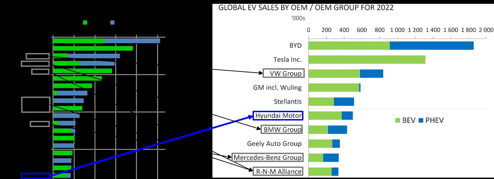
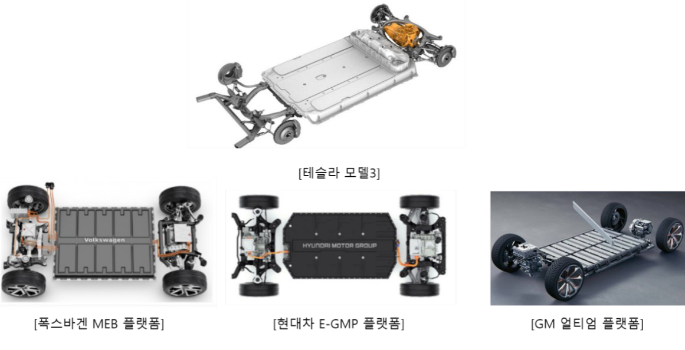
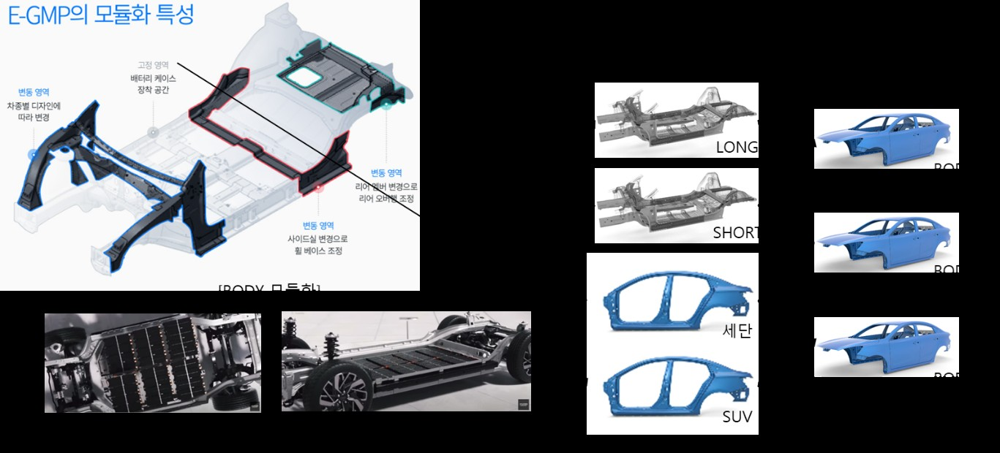
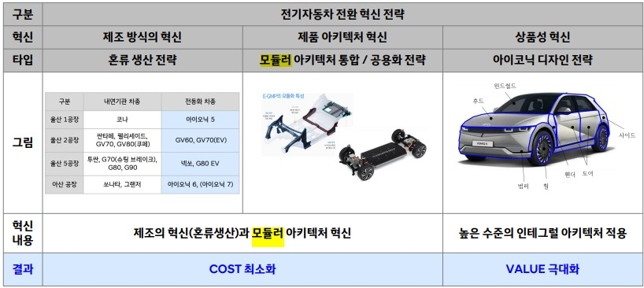

As carbon emission regulations tighten worldwide, the global automotive market is being reshaped from internal combustion vehicles toward electric vehicles. Hyundai Motor is pursuing an electrification transition strategy built on E-GMP, its own dedicated EV platform. Although it announced its transition strategy two years later than Volkswagen, Hyundai ranked second in battery electric vehicle (BEV) sales among the global big five carmakers. This study analyses Hyundai Motor's core capabilities and examines its transition strategy in depth through product architecture theory.
- As carbon emission regulations tighten worldwide, the global automotive market is being reshaped from internal combustion vehicles toward electric vehicles.
- In step with this, Hyundai Motor developed its own EV platform, E-GMP, and is pursuing a transition from internal combustion vehicles to electric vehicles.
- This study analyses Hyundai Motor's EV transition strategy in depth through core capability analysis and product architecture theory, examining the strengths of its EV platform and the technological competitiveness of its core components.
- From this it draws implications for securing Korea's competitiveness in the EV industry and for how firms respond to a paradigm shift in their industry.
1. Introduction — rapid growth during the electrification transition
Global vehicle sales reached 80.63 million units in 2022, of which electric vehicles accounted for 10.5 million. The ratio of EVs to internal combustion vehicles narrowed sharply from 1 in 70 in 2017 to 1 in 7 by 2022. The EV market is expected to grow at a CAGR of 17.31% through 2030 to reach USD 693.7 billion. Five-year financial trends for the global big five (Toyota, Volkswagen, Renault Group, GM and Hyundai-Kia) show Hyundai-Kia growing without major swings in revenue even through the pandemic, reaching third place globally in both revenue and net profit in 2022. Its net profit grew at a CAGR of 36.75%, the highest among the big five.
Tesla, the EV market leader, sold 1.314 million units in 2022, while Volkswagen, the first to commit to the transition, sold 815,000. Hyundai Motor announced its transition strategy after declaring carbon neutrality in 2021, and in 2022 sold 510,000 electric vehicles (including BEVs and PHEVs), ranking sixth globally (fifth on a BEV basis). Notably, despite geopolitical risks including China's THAAD retaliation and the US Inflation Reduction Act, on cumulative sales through August 2023 its global EV share excluding the Chinese market reached 10.6%, placing it fourth.

According to Hyundai Motor's first-quarter 2023 overseas investor relations materials, KRW 3.01 trillion of its KRW 9.82 trillion total operating profit came from a "mix improvement" effect driven by high-value models such as EVs, SUVs and Genesis. What allowed Hyundai Motor Group to unveil six EV line-ups over three years from 2021 and to shorten its launch cycle is E-GMP (Electric-Global Modular Platform), the EV platform first unveiled in December 2020.
2. Hyundai Motor's core capabilities
Core capability (1): manufacturing capability built on manufacturing–design collaboration. Hyundai Motor has a specialised manufacturing organisation within its research centre, the Advanced Production Technology Centre. It plays a pivotal role between the production technology development organisation responsible for global plants and the R&D organisation, verifying manufacturability and production efficiency at the design stage and allowing productivity problems that would arise in volume production to be found and fixed early in development.
Core capability (2): group-wide capability to design and develop electrification components in-house. Through vertically integrated affiliates such as Hyundai Mobis, Hyundai Transys and Hyundai Wia, Hyundai Motor can develop in-house the core components of the electrified powertrain: motors, inverters, reducers, integrated charging control units and battery management systems. Patent network analysis based on WIPS data confirms that core technologies including the E-GMP motor, the EV reducer, the in-wheel motor and battery and electrical control systems have been patented, and that citation and forward citation among group affiliates are active.
Core capability (3): world-class vehicle design capability. Hyundai Motor has continually recruited designers with the strongest track records in the global auto industry, beginning with Peter Schreyer, and has innovated the direction of its interior and exterior design.
3. Innovation strategy 1 — manufacturing innovation: mixed-model production
Internal combustion and electrified vehicles differ in powertrain components and underbody structure, which makes mixed-model production in the same plant difficult. Given the difficulty and investment cost of converting a plant, major carmakers have chosen to build dedicated EV plants at a cost of trillions of won. Hyundai Motor instead built a mixed-model production system in which all six of its E-GMP-based electric vehicles are produced in existing plants alongside internal combustion vehicles. The Advanced Production Technology Centre was given the role of "control tower" for mixed-model production, reflecting the production conditions of E-GMP sites in the platform design in advance and reviewing minimal conversion and optimisation of existing plants ahead of time.
As a result Hyundai-Kia launched the most new electrified models of any major global competitor over the past three years (six in total) and completed production line conversions in under a month, creating a far more efficient production environment than building new plants would have allowed. The cost of installing production equipment suited to a new model was about 10% of competitors', greatly reducing production cost. Being able to adjust the production mix of internal combustion and electric vehicles flexibly with market demand, the company secured capacity to produce 2 million EVs by 2030 — 34% of total output, about six times the 2023 level — without building a new plant.
4. Innovation strategy 2 — product architecture innovation: modular architecture
Theoretical background and the impetus for innovation
Product architecture is the basic design concept governing how the functions a product requires are allocated across its components and how interfaces between components are designed. Where the relationship between functions and components is many-to-many the architecture is integral; where it is one-to-one it is modular. Where component design takes place only within a single firm the architecture is closed; where firms can collaborate it is open (Ulrich, 1995; Fujimoto, 2018). Early in the electrification transition, Volkswagen, GM and Hyundai Motor all developed EVs by modifying the bodies and components of existing internal combustion vehicles, so early EVs were designed with an integral architecture lacking coherence. Components in the central section intruded into the passenger compartment, degrading customer convenience.

Building E-GMP: modularising and standardising core components, and interface design
Drawing on the successful modularisation of the internal combustion Sonata (N3) platform, Hyundai Motor developed E-GMP with the module structure divided into fixed and variable regions. Components in the fixed region were designed as a closed modular architecture standardised across all E-GMP models, while the variable region is a closed integral architecture that changes with each model's design and wheelbase length. Adjusting the wheelbase by changing the sill side allows battery space to be secured flexibly, so the same platform serves vehicles from the mid-size Ioniq 6 sedan to the Ioniq 5, GV60 and EV6 SUVs.
Evidence at the component level supports this. Batteries are standardised into a single battery cell and a single battery module type, with modules added or removed to meet each model's capacity requirement in two configurations: 24 modules (58 kWh) and 32 modules (77.4 kWh). The ICCU (integrated charging control unit), which combines the OBC for EV charging and the LDC for 12 V conversion to enable vehicle-to-load (V2L) functionality, is finally manufactured by Hyundai Mobis with Infac supplying four PCB assemblies; a parts search confirms this standardisation strategy across all models. The drive unit integrating electric motor, reducer and inverter likewise shares modular components across models, with the same rear type 1 unit used in the Ioniq 5, GV60 and EV6.

Through this architectural innovation, E-GMP and its core components were developed as a closed modular architecture, allowing core components to be shared across the electric vehicles of Hyundai, Genesis and Kia. The combination of a type 1 battery, type 1 drive unit and type 1 ICCU, for example, forms the P/E system that constitutes the base specification of the Ioniq 5. Modularisation and standardisation sharply reduce development cost and time, and give the flexibility to apply powertrain systems quickly across a wide range of models.
5. Innovation strategy 3 — product appeal: design innovation
In the mid-to-late 2010s Hyundai Motor's net margin was among the lowest in the automotive industry, which was read as an indicator of a shortfall in the value it could offer customers relative to competitors. The company therefore adopted a design innovation strategy aimed at maximising value through the creation of high value added. While pursuing cost reduction by developing the P/E system and E-GMP as closed modular, it adopted a two-track approach in which interior and exterior design components that define a vehicle's identity were developed as closed integral to secure design quality. Elements demanding in manufacturing terms and previously seen on global luxury models — flush door handles concealed in the door skin, and the clamshell hood generally used on premium cars — were actively adopted, creating high value added in its electric vehicles.
The results followed: the Ioniq 6 won the design category at the 2023 World Car of the Year awards and the Grandeur won in the Car Design category at the Red Dot Design Awards, among the most wins at major global design awards — recognition of the improvement in product value.

6. Conclusion
On the strength of a distinctive manufacturing–design collaboration system, a group-wide ability to develop electrification components in-house, and world-class design capability, Hyundai Motor pursued manufacturing innovation (mixed-model production), modular architecture innovation and design innovation. By cutting cost and raising product value, it ultimately maximised profit.
- The need to expand core component technology capability: Electric motors, reducers and batteries are defined as Integral Inside–Modular Outside (IIMO) components, securing core technology through integrated design and modularisation while retaining general applicability. If capability in technologies such as the reducer combining a hairpin-wound motor with a disconnector device were to fall short, Hyundai Motor would come to depend on the open modular units of global component suppliers, losing its standing as a global carmaker and declining into a mere assembler. Both the country and its firms must therefore keep working to secure integrated development capability and independent technological competitiveness in core components.
- Building and executing innovation strategy on core capabilities: Disruptive innovation changes the mainstream of an industry, and firms that cannot respond nimbly struggle to survive. Responding effectively to a fast-changing market requires rapid decision-making, organisational support, and the formulation and execution of an efficient strategy grounded in a clear grasp of one's own core capabilities. This simple, clear message can serve as a survival strategy and a foundation for growth for firms facing paradigm shifts across technology industries well beyond automotive.